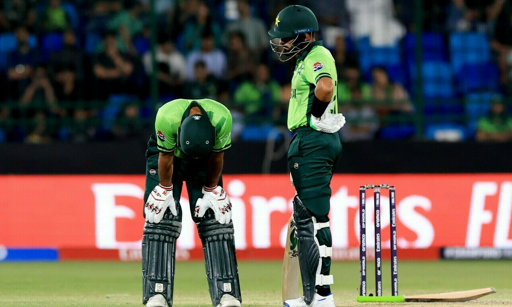

Pakistan Cricket Team(PCT) Latest News About Champion Trophyc 2025
India’s Virat Kohli gestures during the ICC Champions Trophy one-day international
(ODI) cricket match between Pakistan and India at the Dubai International Stadium
in Dubai on February 23, 2025.

Title-holders and hosts Pakistan crashed out in the group phase of the Champions Trophy after
losing to New Zealand and arch-rivals India.
They still have a match to play, against Bangladesh on Thursday, but their tournament is
over — a disappointing end to their first hosting of a major international cricket event
in three decades.